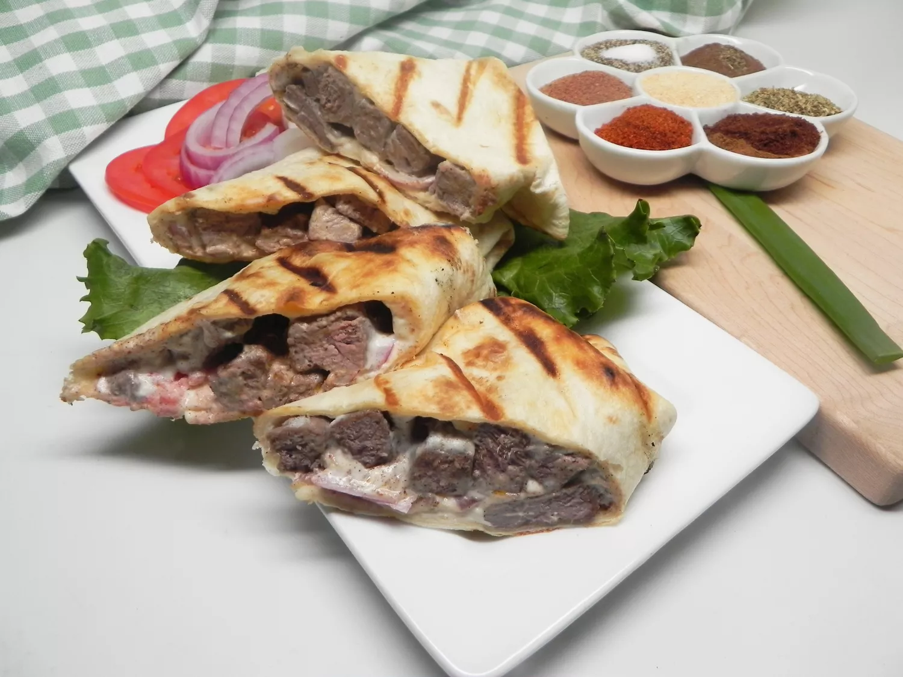

Easy Beef Shawarma

Description:
Shawarma is a popular Middle Eastern dish that originated in the Ottoman
Empire, consisting of meat cut into thin slices, stacked in a cone-like
shape, and roasted on a slowly-turning vertical rotisserie or spit.
Traditionally made with lamb or mutton, it may also be made with chicken,
turkey, beef, or veal.
This is an easy beef shawarma recipe anyone can make!
Ingredients:
Shawarma:
1 tbsp olive oil
1 pound beef top sirloin, thinly sliced
1 tbsp shawarma seasoning
1 tbsp ground allspice
1/2 tbsp salt
Tahini Sauce:
1/2 cup tahini
3 tbsp plain yogurt
1/2 lemon, juiced
1 (10 ounce) package large flour tortillas
2 tomatoes, halved and sliced
1 onion, thinly sliced
Steps:
-
Heat olive oil in a large skillet over medium heat. Add beef, shawarma
seasoning, allspice, and 1/2 teaspoon salt; cook, turning
occasionally, until beef is browned and tender, 3 to 5 minutes.
-
Whisk tahini, yogurt, lemon juice, and 1/2 teaspoon salt together in a
small bowl until creamy.
-
Spread 1 to 2 tablespoons tahini sauce in the center of each tortilla.
Divide beef slices, tomato slices, and onion slices evenly among
tortillas. Roll up tortillas.
-
Preheat a panini press according to manufacturer's instructions. Press
rolled tortillas seam side-down until grill marks appear, about 2
minutes. Cut each tortilla into 4 to 5 pieces.